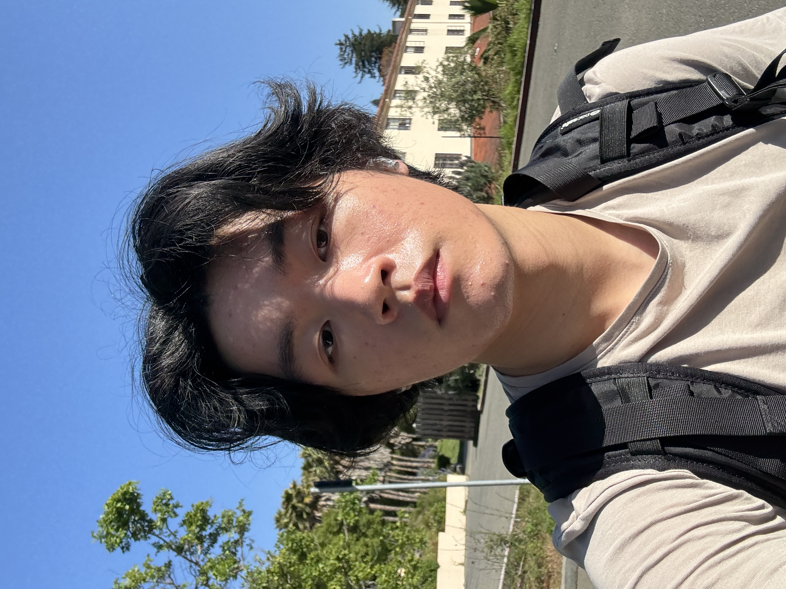

Hi there! I'm an undergrad studying Electrical Engineering and Computer Sciences (EECS) at UC Berkeley.
My research interests lie at the intersection of large language models, benchmarking, and model efficiency. I've been very fortunate to collaborate with Lisa Dunlap at BAIR, advised by Trevor Darrell and Joseph Gonzalez. Currently, we are studying the "vibes" of LLMs and how closely one model's output may align with another's. I'm also working on benchmarking at AfterQuery as a research intern, and will be interning at AMD this summer with the AI group, training and fine-tuning LLMs!
Outside work, I spend writing poems and reading fiction, playing basketball, and searching for new food spots in the bay!